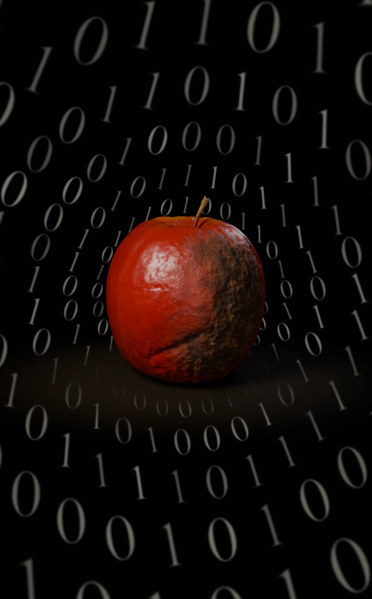

Memoria · Fragilidad · Futuro
Alan Turing
1912 — 1954
Lo que
permanece.
Una manzana se deteriora en el centro de una espiral de ceros y unos. Lo orgánico tiene un final; las ideas encuentran otras formas de continuar.
La historia detrás de la obra
Obra digital · 2026Selecciona la imagen para ampliarla ↗
Hay vidas que terminan antes que el futuro que ayudaron a imaginar.
Detrás de la imagen
Una vida breve.
Un futuro abierto.
En 1936, Alan Turing describió un modelo matemático de cálculo que hoy conocemos como máquina de Turing. Su idea de una máquina universal mostró cómo un mismo mecanismo podía ejecutar distintos procedimientos a partir de instrucciones. Fue una de las bases de la informática teórica.[1]
Durante la Segunda Guerra Mundial trabajó en el esfuerzo colectivo de descifrado de Bletchley Park. Más tarde participó en el desarrollo de computadores e investigó la inteligencia de las máquinas y la formación de patrones en la naturaleza.[1]
En 1952 fue procesado por una relación homosexual, bajo las leyes británicas de la época, y se sometió a un tratamiento hormonal para evitar la prisión. Murió en 1954, a los 41 años, por intoxicación con cianuro. La investigación de entonces concluyó suicidio; las circunstancias de su muerte han sido discutidas.[2]
La obra reúne esa vulnerabilidad humana con una herencia que continúa. La manzana ocupa un lugar finito y material. La espiral hace que el lenguaje binario parezca extenderse más allá del borde de la imagen.
Lectura de la obra
Tres detalles
para mirar de cerca.
La manzana
La piel arrugada y la podredumbre hacen visible el paso del tiempo. El objeto concentra la fragilidad de una vida y la violencia de una sociedad que castigó a su protagonista por su orientación sexual.
Los ceros y los unos
El fondo remite al lenguaje binario asociado a la computación. Es una imagen de su legado: las ideas que ayudan a comprender y construir máquinas pueden seguir circulando mucho después de la muerte de quien las propuso.
La espiral
Los signos aumentan de tamaño al alejarse del centro. La expansión convierte la memoria en algo activo: una idea que pasa de una persona a otras y alcanza un futuro que su autor no llegó a vivir.
El relato y la evidencia
La manzana:
una leyenda sin confirmar
La imagen de Turing mordiendo una manzana envenenada es muy conocida. Se encontró una manzana parcialmente comida cerca de su cuerpo, pero no fue analizada para detectar veneno. Su presencia no demuestra que fuera el medio de la intoxicación.[3]
Esta obra recoge ese imaginario como símbolo. La manzana podrida es una elección artística: permite hablar del cuerpo, del tiempo y de una pérdida. La espiral desplaza la mirada hacia lo que Turing dejó abierto para quienes vinieron después.
Imaginar la computación
Formula su modelo de máquina de cálculo y la idea de máquina universal.
El trabajo compartido
Se incorpora a Bletchley Park durante la guerra.
La persecución
Es condenado por una relación homosexual y recibe tratamiento hormonal.
Una vida interrumpida
Muere a los 41 años. Su trabajo permanece como parte de los fundamentos de la computación.
Para seguir explorando
Fuentes históricas · Consultadas en octubre de 2026
- King’s College, Cambridge — Alan Mathison Turing: exposición documental y archivo ↗
- American Physical Society — El proceso de 1952 y sus consecuencias ↗
- McGill University · Office for Science and Society — La muerte de Turing y la manzana que no fue analizada ↗
- Alan M. Turing · London Mathematical Society — On Computable Numbers, with an Application to the Entscheidungsproblem ↗
Obra digital realizada en 3D, con fondo binario creado para la composición. Manzana basada en el escaneo 3D Apple 003, de ambientCG / Lennart Demes (CC0), transformado para representar el deterioro.